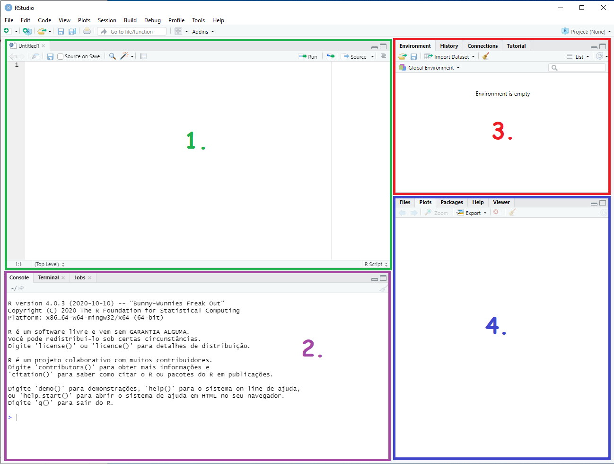

library(ggplot2)1 Introdução
1.1 A lógica de programação
Imagine que o computador é uma empresa que realiza diferentes tarefas e que nessa empresa existem funcionários de várias partes do mundo. Cada funcionário realiza as mesmas tarefas, porém, falando diferentes idiomas. Assim, se você quer que um funcionário americano realize uma tarefa, terá que ordenar que ele a faça em inglês; se você quer que um funcionário italiano realize a mesma tarefa, terá de fazer o pedido para ele falando italiano, e assim sucessivamente. No computador, os funcionários são as linguagens de programação e o idioma é o vocabulário da linguagem (ou a maneira de escrever os comandos em cada linguagem). Resumidamente e exemplificadamente, você pode executar uma tarefa usando R ou pode executar essa mesma tarefa usando Python ou qualquer outra linguagem de programação pois a lógica de comunicação com o computador será a mesma, porém, os comandos para execuar a mesma tarefa podem ser diferentes em cada linguagem. Como consequência, o primeiro passo para dominar as linguagens de programação é desenvolver uma lógica de programação.
A lógica de programação é um raciocínio sobre como se comunicar com o computador para realizar tarefas. Seguindo o exemplo da empresa citado no parágrafo anterior, se você precisa de um relatório impresso, terá de falar o seguinte “eu preciso que você imprima esse relatório”. Porém, como os funcionários falam diferentes idiomas, você precisa fazer esse pedido em uma linguagem diferente a depender do funcionário responsável pela impressão. A maneira como você faz o pedido (“eu preciso que você imprima esse relatório”) não vai mudar independente do funcionário que receberá a ordem, o que muda é apenas o idioma em que a ordem será feita. No computador, essa maneira como você faz o pedido é a lógica de programação, ela será a mesma para qualquer linguagem de programação, que no caso do exemplo corresponde ao idioma falado.
O primeiro passo para desenvolver uma lógica de programação é entender as operações fundamentais de uma linguagem de programação. Uma linguagem de programação é nada mais do que uma maneira de se comunicar com o computador para ordenar que ele execute tarefas automáticas. As linguagens são configuradas em sistemas binários (negação e afirmação). Cada linguagem de programação possui o seu vocabulário, porém, todas as linguagens partem dos mesmos princípios e das mesmas lógicas fundamentais. Exemplos: JavaScript, R, Python, Julia, Ruby, Scala…
1.2 Como usar a linguagem de programação
O primeiro paso para se comunicar com o computador por meio de uma linguagem de programação é informar à máquina a sua intenção de usar o vocabulário da linguagem. Em outras palavras, é preciso “instalar” a linguagem em sua máquina. Na analogia da empresa anteriormente mencionada, instalar a linguagem de programação seria como fazer um curso de idiomas e receber um manual de instruções de gramática para falar com os empregados.
Nesse material, utilizaremos a linguagem R. Seguindo o primeiro passo, a instalação da linguagem deve ser feita antes de qualquer outro procedimento. Os métodos de instalação variam de acordo com o sistema operacional do usuário. Nesse material, vamos supor que o aluno dispõe de uma máquina com sistema operacional windows. Nesse caso, o usuário deve baixar os componentes da linguagem nesse endereço Tendo feito isso, o usuário deve executar o arquivo baixado e instalar normalmente como qualquer instalação convencional no sistema windows.
O segundo passo é adotar um ambiente de execução. Esses ambientes são softwares também conhecidos como ambiente de desenvolvimento integrado (IDE) - Exemplos: Rstudio, Pycharm, Google Colaboratory, StataMP-. De forma geral, o IDE é uma plataforma onde você escreve as ordens que deseja que o computador execute em uma determinada linguagem. Especificando com outras palavras, o ambiente de execução é um software usado para escrever as ordens ao computador por meio do vocabulário da linguagem. Como vamos usar a linguagem R nesse material, temos que adotar um IDE que execute ordens nessa linguagem. É recomendado que o usuário utilize o Rstudio apesar de existirem diversas outras ferramentas com esse mesmo propósito. Para tanto, é preciso baixar o programa nesse endereço e proceder com com os procedimentos padrões de instalação de softwares no sistema windows.
É importante ressaltar que uma linguagem de programação não é um software, por exemplo, é errôneo se referir à linguagem R como “software R”, assim como é equivocado se referir à linguagem stata como “software stata”, e assim sucessivamente. Também é importante destacar que os IDEs não são linguagens de programação, eles apenas transferem para o computador uma ordem para ser executado em uma determinada linguagem. Com isso, é errôneo afirmar que uma dada tarefa foi “executada pelo software Rstudio”.
Ao instalar o Rstudio, o usuário irá se deparar com a tela ilustrada na imagem a seguir. Note que o IDE é formado por quatro painéis, cada um deles com a sua funcionalidade. O painel 1 é conhecido como input ou painel de entrada. Nesse painel o usuário irá abrir e manipular os arquivos de entrada como scripts e códigos de programação em R. Outros arquivos de entrada também são suportados como arquivos html, markdown, dentre outros. Mas essas extensões adicionais não são o foco do curso. Para gerar um arquivo de entrada onde serão escritos os comandos da linguagem R, pressione Ctrl Shift n ou vá na parte superior esquerda, na barra de tarefas do IDE em file, new file, r script.
O painel 2 é conhecido como console. Nesse painel serão expostos os resultados das tarefas executadas nos comandos escritos no painel 1. O usuário também pode escrever e executar os comandos diretamente no console, com a diferença de que no r script os códigos podem ser salvos para o uso posterior ao contrário do console.
O painel 3 é conhecido como ambiente de trabalho ou working environment. Ele é dividido em quatro abas que podem ser acessadas separadamente, sendo: o Environment onde são expostos todos os objetos criados, o histórico (history) onde os últimos comandos ficam armazenados numa espécie de breve histórico de comandos, as conecções (Connectione) onde são expostas as ferramentas conectadas a linguagem R e ao Rstudio para executar tarefas, e a aba de tutoriais, onde o usuário pode acessar um breve guia sobre como usar o Rstudio. Versões mais recentes também disponibilizam abas adicionais sobre controle de versionamento no ambiente de trabalho, mas por enquanto esse não é o foco do curso.
O painel 4 é conhecido como output ou painel de saída. Nele o usuário pode visualizar os produtos gerados com os comandos e navegar pelo diretório de trabalho. O painel é dividido em cinco abas, sendo: a aba de arquivos (files), onde o usuário pode navegar pela pasta que está usando; a aba plots, onde o usuário pode visualizar gráficos e figuras geradas com os comandos escritos no painel 1; a aba de bibliotecas (packages) onde o usuário pode acessar as bibliotecas instaladas na linguagem; a aba de ajuda (Help), onde o usuário pode consultar manuais de instrução sobre diferentes comandos e bibliotecas; e por fim a aba de visualização (View), onde o usuário pode visualizar objetos dinâmicos ou estáticos criados com alguma ferramenta adicional auxiliar à linguagem R como páginas web, arquivos pdf, etc.

1.3 Comandos
Os ambientes de execução podem operar em ordens diretas (cliques) ou comunicação agrupada (comandos). Os ambientes de execução sugeridos nesta disciplina operam com linhas de comando. Nas linhas de comando, o operador (aluno) escreve uma ordem que o ambiente de execução entende como um comando para executar uma tarefa. Esses comandos são escritos individualmente em cada linha, isto é, cada linha escrita só agrupa um único comando. Ao escrever uma linha de comando no Rstudio, você poderá executar essse comando posicionando o cursor na linha (ou selecionando as linhas de interesse) e em seguida pressionando “Ctrl Enter”.
Alguns comandos já estão pré-programados no vocabulário das linguagens. Porém outros comandos precisam ser elaborados pelo próprio usuário usando os comandos pré-progamados e as demais ferramentas próprias do vocabulário da linguagem. Por exemplo, se você quer somar dois números quaisquer a e b, você pode fazer isso com uma operação de soma que já é automaticamente reconhecida pela linguagem R. Mas se você quer somar \(a + b\) apenas se \(a > b\), então você precisa usar a lógica de programação para programar esse comando.
1.4 Bibliotecas
O usuário pode ordenar que o computador execute uma tarefa por meio de comandos. Além disso, o usuário também pode unir vários comandos em uma função para executar uma tarefa de interesse. Muitas funções já estão disponíveis na própria linguagem nativa, por exemplo, caso o usuário queira gerar um gráfico ele pode usar o comando plot() que é uma função que usa vários comandos nativos da linguagem R para gerar uma figura. Assim como a função plot, muitas outras funções já estão disponíveis e prontas para o acesso no ato da instalação da linguagem. Porém, existem funções que são criadas por terceiros e que precisam ser instaladas para que possam ser usadas. Por exemplo, em vez de elaborar um gráfico com a função plot, o usuário pode usar a função ggplot. No entanto, essa função só pode ser usada caso a biblioteca ggplo2 esteja instalada. O usuário pode verificar se uma determinada biblioteca está instalada navegando pelo painel inferior direito, na aba Packages, digitando o nome da biblioteca na guia de busca. Caso a biblioteca esteja instalada, então a busca retornará um indicativo com o nome da biblioteca, do contrário, o resultado da busca será vazio.
Para instalar uma biblioteca o usuário deve usar o comando install.packages() posicionando no parêntesis o nome da biblioteca entre aspas. Por exemplo, para instalar a biblioteca ggplot2, o usuário deve executar o comando install.packages(“ggplot2”). Feito isso, a biblioteca estará disponível na lista de bibliotecas instaladas da aba Packages do painel inferior direito. Uma vez instalada, a instalação não precisa ser refeita, exceto em caso de atualização para uma nova versão.
No entanto, não basta instalar a biblioteca para usufruir de suas funções. Sempre que o Rstudio for reiniciado ou sempre que uma nova seção for iniciada no Rstudio é necessário liberar a biblioteca para o uso. Isso é feito por meio do comando library() ou require() sempre posicionando entre parêntesis o nome da biblioteca desejada, dessa vez, sem aspas. Por exemplo, para liberar a biblioteca ggplot2 para o uso, proceda conforme a seguir:
1.5 Operações fundamentais em R
1.5.1 Soma
Para efetuar uma soma, você deve utilizar o operador de adição “+”. Por exemplo, para somar \(1 + 1\) proceda como a seguir:
1+1[1] 21.5.2 Subtração
Para efetuar uma subtração, você deve utilizar o traço simples “-” como operador de subtração. Por exemplo, para subtrair \(1 - 1\) proceda como a seguir:
1-1[1] 01.5.3 Multiplicação
Para efetuar uma multiplicação, você deve utilizar o asterisco “*” como operador de multiplicação. Por exemplo, para somar \(1\) x \(1\) proceda como a seguir:
1*1[1] 11.5.4 Divisão
Para efetuar uma divisão, você deve utilizar a barra simples “/” como operador de divisão. Por exemplo, para dividr 4 por 2, proceda como a seguir:
4/2[1] 21.5.5 Potência
Para efetuar uma potenciação, você deve utilizar o circunflexo “^” ou o duplo asterisco “**” como operador de multiplicação. Por exemplo, para calcular \(2^3\) proceda como a seguir:
2^3[1] 8O que também pode ser feito da seguinte maneira:
2**3[1] 81.5.6 Raíz quadrada
Para efetuar uma radiciação, você deve utilizar o comando sqrt posisionando o número em prêntesis. Por exemplo, para calcular \(\sqrt{16}\) proceda como a seguir:
sqrt(16)[1] 41.5.7 Logaritmo
Para calcular o logaritmo de um número, você deve utilizar ocomando log10 posisionando o número em prêntesis. Por exemplo, para calcular \(log(2)\) proceda como a seguir:
log10(2)[1] 0.301031.5.8 Logaritmo natural
Para calcular o logaritmo natural de um número, você deve utilizar ocomando log posisionando o número em prêntesis. Por exemplo, para calcular \(ln(2)\) proceda como a seguir:
log(2)[1] 0.69314721.5.9 Seno
Para calcular o seno de um número, você deve utilizar ocomando sin posisionando o número em prêntesis. Por exemplo, para calcular o seno de 90 proceda como a seguir:
sin(90)[1] 0.89399671.5.10 Cosseno
Para calcular o cosseno de um número, você deve utilizar ocomando cos posisionando o número em prêntesis. Por exemplo, para calcular o cosseno de 90 proceda como a seguir:
cos(90)[1] -0.44807361.5.11 Tangente
Para calcular a tangente de um número, você deve utilizar ocomando tan posisionando o número em prêntesis. Por exemplo, para calcular a tangente de 90 proceda como a seguir:
tan(90)[1] -1.99521.5.12 Divisão inteira
Algumas divisões resultam em números não inteiros, de tal modo que o resultado é composto por um número inteiro aderido de um “resto”. Para calcular a divisão sem o resto você deve usar o operador %/%. Por exemplo, uma divisão inteira de cinco por dois deve resultar em dois e pode ser feita da seguinte maneira:
5 %/% 2[1] 21.5.13 Resto da divisão
Porém, se o usuário estiver interessado em obter apenas o resto da divisão, pode usar o operador %%. No caso do exemplo anterior, o resto da divisão é um e pode ser obtido da seguinte maneira:
5 %% 2[1] 11.6 Operadores lógicos
Os operadores lógicos são usados para comparar valores. O principal operador lógico de uma linguagem de programação é o operador de afirmação ou negação. Sempre que houver uma afirmação, a lingaugem retornará um sinal de verdadeiro (TRUE) e sempre que houver uma negação, a lingaugem retornará um sinal de falso (FALSE). Nos comandos, o TRUE pode ser substituído pelo T, enquanto o FALSE pode ser substituído pelo F. A linguagem R atribui o valor zero para as negações e o valor um para as afirmações. Assim, TRUE = 1 e FALSE = 0 sempre ocorrerá.
1.6.1 Igualdade
Para checar uma condição de igualdade, você deve usar o operador “==”. Por exemplo, para checar se dois é igual a três, você deve proceder como:
2 == 3[1] FALSE1.6.2 Desigualdade maior que
Para checar uma condição de desigualdade na forma de maior que, isto é, para verificar se um valor é maior que outro, você deve usar o operador “>”. Por exemplo, para checar se dois é maior que três, você deve proceder como:
2 > 3[1] FALSE1.6.3 Desigualdade menor que
Para checar uma condição de desigualdade na forma de menor que, isto é, para verificar se um valor é menor que outro, você deve usar o operador “<”. Por exemplo, para checar se dois é menor que três, você deve proceder como:
2 < 3[1] TRUE1.6.4 Desigualdade maior ou igual
Para checar uma condição de desigualdade na forma de maior ou igual a, isto é, para verificar se um valor é maior ou igual outro, você deve usar o operador “>=”. Por exemplo, para checar se dois é maior ou igual a três, você deve proceder como:
2 >= 3[1] FALSE1.6.5 Desigualdade menor ou igual
Para checar uma condição de desigualdade na forma de menor ou igual a, isto é, para verificar se um valor é menor ou igual outro, você deve usar o operador “<=”. Por exemplo, para checar se dois é menor ou igual a três, você deve proceder como:
2 <= 3[1] TRUE1.6.6 Diferente de
Para checar se um valor é diferente de outro, você deve usar o operador “!=”. Por exemplo, para checar se dois é diferente de três, você deve proceder como:
2 != 3[1] TRUE1.6.7 Operador “e”
Muitas vezes precisamos usar duas operações em conjunto ou até mesmo checar se duas ou mais propriedades ocorrem ao mesmo tempo. Nesse caso, o ideal é utilizar o operador “e” que baseia-se no acontecimento de duas operações simultâneas. Assim, dadas duas operações quaisquer, se as duas ocorrem ao mesmo tempo então o output será TRUE, do contrário o output será FALSE. Por exemplo, esse operador poderia ser usado caso quiséssemos verificar se 2 é menor que 3 e ao mesmo tempo diferente de 4. Em R operador “e” é dado pelo “e comercial” &.
2 < 3 & 2 != 4[1] TRUE1.6.8 Operador “ou”
Em uma situação em que se deseja verificar se pelo menos uma operação ocorre dentre várias operações, então o ideal é utilizar o operador “ou”. Por exemplo, se temos duas operações, a operação 1 e a operação 2 e se precisamos verificar se pelo menos uma das duas operações ocorre, podemos perguntar se a operação 1 OU a operação 2 estão ocorrendo. O output será “TRUE” caso uma das operações ocorra e “FALSE” caso nenhuma das operações ocorra. Em R esse operador é dado pela barra vertical “|”. Por exemplo, suponha que queremos verificar se 2 é menor que 3 pu se 2 é maior que 5. Nesse caso, precisamos proceder conforme a seguir:
2 < 3 | 2 > 5[1] TRUE1.7 Objetos
As linguagens de programação geralmente são identificadas ao objeto, isto é, é possível criar um objeto que representa algum ítem ou valor. Em R, os objetos devem ser criados om um indicativo de igualdade “=”. Por exemplo, imagine que precisamos criar um objeto com o nome “idade” contendo a idade de uma pessoa em anos. Este procedimento é feito informando o comando “nome do objeto = valor do objeto” conforme demonstrado a seguir:
idade = 18Ao executar esse comando, um novo objeto surgirá na aba Environment do painel 3. Esse objeto tem o nome “idade” e recebe um valor de 18. Para visualizar o valor do objeto, o usuário pode usar a função print que imprimirá no painel 2 (console) o valor referente ao objeto mencionado.
print(idade)[1] 18Tendo feito isso, e dado que o objeto de nome idade e valor 18 está no Environment, cada vez que esse objeto for mencionado a linguagem R reconhecerá que se trata do número 18. Para exemplificar, suponha que uma pessoa é considerada idosa a partir dos 60 anos e suponha que você precise descobrir quantos anos ainda restam para que essa pessoa com idade = 18 se torne idosa. Nesse caso, você deve proceder como:
60 - idade[1] 421.8 Tipos de objetos
Os objetos são maneiras de armazenar informações em um dado arranjo. Em R, essas informações podem ser arranjadas em funções, vetores, matrizes, listas, arrays ou quadros de dados (data frames). Cada objeto tem a sua função específica e deve ser usado conforme a necessidade. Por exemplo, uma matriz é ideal para armazenar objetos com duas dimensões (linha e coluna) mas não é adequada para agrupar objetos com três dimensões, nesse caso melhor seria usar um array ou uma lista.
1.8.1 Vetores
Os vetores são objetos que servem para guardar informações unidimensionais, isto é, informações que podem ser escritas em uma única linha ou coluna. Por exemplo, imagine que você trabalhou cinco dias em um emprego e notou em uma planilha o seu salário de cada dia. Suponha que os seus ganhos dia após dia em reais foram 50.00, 52.00, 55.00, 48.00, 60.00. Se você anotou essas informações em uma linha de uma planilha, então você tem um vetor linha. Analogamente, se as informações foram anotadas em uma coluna de uma planilha, tem-se um vetor coluna. Se você chamou essa planilha de “salario”, então isso é o mesmo que:
\[ salario = [50.00, 52.00, 55.00,48.00,60.00] \]
Para digitar esse vetor em R deve-se usar o operador de vetores c(), sempre colocando os valores dentro do parêntesis separando cada valor por uma vírgula. Lembre-se que o separador decimal da linguagem R é o ponto e que a vírgula é um separador de valores. Com isso, o vetor anterior deve ser escrito como:
salario = c(50.00, 52.00, 55.00, 48.00, 60.00)Feito isso, um objeto de nome salario irá aparecer no ambiente de trabalho. Note que o nome do objeto é sucedido do termo num [1:5], isso indica que se trata de um vetor numérico com cinco elementos. Um detalhe importante a ser mencionado é o fato de que valores não numéricos também podem ser armazenados em vetores, por exemplo:
nomes = c("João", "Maria", "José")Note que os valores não numéricos sempre devem estar entre aspas. Para checar se um dado objeto é um vetor, o usuário pode usar a função is.vector() indicando o nome do objeto entre parêntesis. Por exemplo, para checar se o objeto salario é um vetor, proceda conforme a seguir:
is.vector(salario)[1] TRUECaso o elemento de fato seja um vetor, o output obtido será TRUE, do contrário o output será FALSE. Para transformar um determinado objeto em um vetor, o usuário pode usar a função as.vector(), indicando o nome do objeto entre parêntesis. Por exemplo, para transformar uma sequência de 1 a 10 em um vetor, proceda conforme a seguir:
sq = as.vector(1:10)1.8.2 Matrizes
As matrizes são objetos que servem para guardar informações bidimensionais, isto é, informações que podem ser escritas em um múltiplas linhas e múltiplas colunas, desde que o usuário precise realizar operações algébricas com esses valores. Para exemplificar, considere o exemplo anterior do salário. Considere agora que você trabalhou cinco dias da semana não em um mas em dois empregos. Agora você vai atribuir um diasda semana para cada linha e vai anotar os ganhos de cada emprego em colunas diferentes. Suponha agora que os ganhos do emprego 2 foram de 140.00, 160.00, 165.00, 150.00 e 155.00. Isso equivale a:
\[ salario = \left[ \begin{array}{cc} Emprego 1 & Emprego 2\\ \hline 50.00 & 140.00\\ 52.00 & 160.00\\ 55.00 & 165.00\\ 48.00 & 150.00\\ 60.00 & 155.00 \\ \end{array} \right] \]
Agora a planilha de ganhos possui dois vetores coluna de cinco elementos cada ou cinco vetores linha de dois elementos cada. Para informar essa planilha como matriz no R, o usuário deve usar a função matrix. Nessa função o usuário deve digitar os elementos da planilha linha por linha em um único vetor e indicar isso com o parâmetro by.row = TRUE. Ou se preferir o usuário pode digitar os elementos da planilha coluna por coluna em um único vetor e indicar isso com o parâmetro by.row = FALSE. O usuário também deve informar o número de linhas da matriz com o parâmetro nrow e o número de colunas com o parâmetro ncol. Para repassar a planilha anterior em R na forma de matriz, proceda conforme a seguir:
salario = matrix(
c(50,140,52,160,55,165,48,150,60,155),
byrow = TRUE,
ncol = 2,
nrow = 5
)
print(salario) [,1] [,2]
[1,] 50 140
[2,] 52 160
[3,] 55 165
[4,] 48 150
[5,] 60 155Isso é o mesmo que fazer:
salario = matrix(
c(50,52,55,48,60,140,160,165,150,155),
byrow = FALSE, # agrupamento por coluna
ncol = 2,
nrow = 5
)
print(salario) [,1] [,2]
[1,] 50 140
[2,] 52 160
[3,] 55 165
[4,] 48 150
[5,] 60 155Para dar nomes às linhas de uma matriz, use a função rownames(), indicando o nome da matriz entre o parêntesis e informando os nomes das linhas em um vetor. Por exemplo:
rownames(salario) = c("Seg", "Ter", "Quar", "Qui", "Sex")
print(salario) [,1] [,2]
Seg 50 140
Ter 52 160
Quar 55 165
Qui 48 150
Sex 60 155Para dar nomes às colunas de uma matriz, use a função colnames(), indicando o nome da matriz entre o parêntesis e informando os nomes das colunas em um vetor. Por exemplo:
colnames(salario) = c("Emprego 1","Emprego 2")
print(salario) Emprego 1 Emprego 2
Seg 50 140
Ter 52 160
Quar 55 165
Qui 48 150
Sex 60 155Para verificar se um determinado objeto é uma matriz, use a função is.matrix(), indicando o nome do objeto entre o parêntesis, por exemplo:
is.matrix(salario)[1] TRUECaso o elemento de fato seja uma matriz, o output obtido será TRUE, do contrário o output será FALSE. Para transformar um determinado objeto em uma matriz, o usuário pode usar a função as.matrix(), indicando o nome do objeto entre parêntesis. Por exemplo, para transformar uma sequência de 1 a 10 em uma matriz, proceda conforme a seguir:
sq = as.matrix(1:10)
print(sq) [,1]
[1,] 1
[2,] 2
[3,] 3
[4,] 4
[5,] 5
[6,] 6
[7,] 7
[8,] 8
[9,] 9
[10,] 101.8.2.1 Operações com matrizes
1.8.2.1.1 Soma de matrizes
A soma de matrizes em R não apresenta diferenças das operações convencionais de soma, ou seja, é feita usando o operador de soma “+”. Para exemplificar, considere as dias matrizes a seguir:
\[ matriz1 = \left[ \begin{array}{cc} 0 & 2 \\ 3 & 1 \end{array} \right] \quad \quad \quad \quad matiz2 = \left[ \begin{array}{cc} 5 & 3\\7 & 0 \end{array} \right] \]
Para gerar uma nova matriz de nome matriz3 contendo a soma da matriz 1 com a matriz 2, basta proceder conforme a seguir:
matriz1 = matrix(c(0,2,3,1), nrow = 2, ncol = 2, byrow = TRUE)
matriz2 = matrix(c(5,3,7,0), nrow = 2, ncol = 2, byrow = TRUE)
matriz3 = matriz1 + matriz2
print(matriz3) [,1] [,2]
[1,] 5 5
[2,] 10 11.8.2.1.2 Subtração de matrizes
De maneira análoga à operação de soma, a subtração de matrizes é feita usando o operador de subtração “-”. Nesse caso, os elementos de cada posição das matries são subtraídos. Para exemplificar, considere subtrair a matriz 1 da matriz 2, procedendo de acordo com o código a seguir:
matriz3 = matriz1 - matriz2
print(matriz3) [,1] [,2]
[1,] -5 -1
[2,] -4 1É importante ressaltar que a soma e a subtração de matrizes só podem ser feitas com matrizes de mesma dimensão.
1.8.2.1.3 Multiplicação de matrizes
Na multiplicação, não é correto utilizar o asterisco como operador de multiplicação dado que multiplicar os termos de mesma posição de duas matrizes não é a maneira correta de efetuar o produto de matrizes. Para essa tarefa, o operador de multiplicação agora é \(\%*\%\) . Para exemplificar, considere multiplicarr a matriz 1 pela matriz 2.
matriz3 = matriz1 %*% matriz2
print(matriz3) [,1] [,2]
[1,] 14 0
[2,] 22 91.8.2.1.4 Matriz transposta
A transposta de uma matriz nada mais é do que reorganizar as linhas como colunas e as colunas como linhas. Para obter a transposta de uma matriz em R basta usar a função t(), indicando entre parêntesis o nome da matriz que se deseja transpor. Para exemplificar, considere transpor a matriz 1. Nesse caso, deve-se proceder conforme a seguir:
t(matriz1) [,1] [,2]
[1,] 0 3
[2,] 2 11.8.2.1.5 Matriz inversa
Uma matriz \(M\) pode ser invertida em R para obter \(M^{-1}\) usando o comando solve() e indicando dentro do parêntesis a matriz que se deseja inverter. Para exemplificar, considere obter a inversa da matriz 1. Nesse caso, deve-se proceder conforme a seguir:
solve(matriz1) [,1] [,2]
[1,] -0.1666667 0.3333333
[2,] 0.5000000 0.00000001.8.2.1.6 Exemplo de operações com matrizes: O estimador de mínimos quadrados ordinários
Na estatística, os coeficientes lineares de uma equação linear com múltiplos argumentos podem ser calculados por meio do método de mínimos quadrados ordinários. Se essa equação é:
\[ y = \beta_0 + \beta_1x_1 + \beta_2x_2 + \dots + \beta_n x_n \]
Um termo de erro \(\varepsilon\) é adicionado e a relação anterior pode ser escrita matricialmente como:
\[ \textbf{y} = \textbf{x} \beta + \varepsilon \]
Mininiando a soma dos erros quadráticos, o vetor \(\beta\) de parâmetros estimados é:
\[ \beta = (\textbf{x}^\prime \textbf{x})^{-1}\textbf{x}^\prime \textbf{y} \]
Para exemplificar, considere usar a base natova sobre automóveis mtcars e suponha que estejamos interessados em saber a relação entre o consumo do automóvel (mpg) e as variáveis peso (wt) e número de cilindros (cyl). Nesse caso, a matriz y são os valores da coluna mpg e a matriz x é composta pelas colunas wt e cyl. O vetor de parâmetros estimados pode ser calculado de acordo com o seguinte processo:
y = matrix(mtcars$mpg, ncol = 1) # matriz y
x = matrix(c(rep(1,nrow(mtcars)), mtcars$wt, mtcars$cyl), ncol = 3) # matriz x
tx = t(x) # transposta da matriz x
beta = solve(tx%*%x)%*%tx%*%y
print(beta) [,1]
[1,] 39.686261
[2,] -3.190972
[3,] -1.507795Isso é o mesmo que fazer:
summary(lm(mtcars$mpg ~ 1 + mtcars$wt + mtcars$cyl))
Call:
lm(formula = mtcars$mpg ~ 1 + mtcars$wt + mtcars$cyl)
Residuals:
Min 1Q Median 3Q Max
-4.2893 -1.5512 -0.4684 1.5743 6.1004
Coefficients:
Estimate Std. Error t value Pr(>|t|)
(Intercept) 39.6863 1.7150 23.141 < 2e-16 ***
mtcars$wt -3.1910 0.7569 -4.216 0.000222 ***
mtcars$cyl -1.5078 0.4147 -3.636 0.001064 **
---
Signif. codes: 0 '***' 0.001 '**' 0.01 '*' 0.05 '.' 0.1 ' ' 1
Residual standard error: 2.568 on 29 degrees of freedom
Multiple R-squared: 0.8302, Adjusted R-squared: 0.8185
F-statistic: 70.91 on 2 and 29 DF, p-value: 6.809e-121.8.3 Arrays
O conceito de array generaliza a idéia de matrix. Enquanto em uma matrix os elementos são organizados em duas dimensões (linhas e colunas), em um array os elementos podem ser organizados em um número arbitrário de dimensões. Em R um array é definido utilizando a função array(). O usuário deve informar dentro do parêntesis as informações sempre ordenadas coluna a coluna e indicar as dimensões do array com o parâmetro dim. Por exemplo, imagine que queiramos armazenar o consumo de dois bens por duas famílias em três anos, neste caso, teremos que criar um array de dimensão 2 x 2 x 3. Para exemplificar, imagine que esse consumo seja o demonstrado a seguir:
\[ \begin{array}{ccc} Ano 1 = \left[ \begin{array}{c|cc} & Bem 1 & Bem 2 \\ \hline Familia 1 & 0 & 5\\ Familia 2 & 2 & 3\\ \end{array} \right] & Ano 2 = \left[ \begin{array}{c|cc} & Bem 1 & Bem 2 \\ \hline Familia 1 & 1 & 4\\ Familia 2 & 3 & 2\\ \end{array} \right] &\\ Ano 3 = \left[ \begin{array}{c|cc} & Bem 1 & Bem 2 \\ \hline Familia 1 & 2 & 3\\ Familia 2 & 2 & 3\\ \end{array} \right] \end{array} \]
Em R isso equivale a:
consumo = array(
c(
0,2,5,3, # Ano 1
1,3,4,2, # Ano 2
2,2,3,3 # ano 3
),
dim = c(2,2,3)
)
print(consumo), , 1
[,1] [,2]
[1,] 0 5
[2,] 2 3
, , 2
[,1] [,2]
[1,] 1 4
[2,] 3 2
, , 3
[,1] [,2]
[1,] 2 3
[2,] 2 3Para checar se um objeto é um array, use a função is.array(). Caso o objeto de fato seja um array, o output obtido será TRUE, do contrário o output será FALSE.
is.array(consumo)[1] TRUE1.8.4 Listas
As listas são objetos ideais para guardar informações em múltiplas dimensões, isto é, informações que possuam múltiplas linhas, múltiplas colunas e múltiplas planilhas. As listas podem armazenar diversos outros objetos, incluindo outras listas. Por exemplo, uma lista pode conter um vetor e uma matriz ou múltiplos vetores e múltiplas matrizes. Para criar uma lista, o usuário deve usar a função list() indicando dentro do parêntesis os objetos que irão compor a lista. Por exemplo, vamos criar uma lista contendo os as matrizes de consumo do array anterior e vamos chamar essa lista de lista1.
ano1 = matrix(
c(0,5,2,3), byrow = TRUE, nrow = 2, ncol = 2
)
ano2 = matrix(
c(1,4,3,2), byrow = TRUE, nrow = 2, ncol = 2
)
ano3 = matrix(
c(2,3,2,3), byrow = TRUE, nrow = 2, ncol = 2
)
lista1 = list(ano1, ano2, ano3)
print(lista1)[[1]]
[,1] [,2]
[1,] 0 5
[2,] 2 3
[[2]]
[,1] [,2]
[1,] 1 4
[2,] 3 2
[[3]]
[,1] [,2]
[1,] 2 3
[2,] 2 3Para checar se um objeto é uma lista, use a função is.list(). Caso o elemento de fato seja uma lista, o output obtido será TRUE, do contrário o output será FALSE.
is.list(lista1)[1] TRUE1.8.5 Data frames
Os data frames - ou quadro de dados - são objetos que possuem utilidade semelhante às matrizes, isto é, são ideais para armazenar informações bidimensionais. No entanto, nos data frames não é possível realizar operações algébricas como nas matrizes. Os data frames são exatamente iguais às planilhas do excel, onde cada coluna é uma variável com valores distribuídos entre as linhas. Essa estrutura de dados é inserida em R usando a função data.frame(), de tal modo que o usuário precisa indicar o nome de cada coluna precedida pelos seus valores em um vetor. Por exemplo, se usarmos o exemplo anterior do salário de dois empregos e quisermos colocar as informações dos ganhos em um data frame de nome salario_diario, devemos proceder conforme a seguir:
salario_diario = data.frame(
emprego1 = c(50,52,55,48,60),
emprego2 = c(140,160,165,150,155)
)
print(salario_diario) emprego1 emprego2
1 50 140
2 52 160
3 55 165
4 48 150
5 60 155Você pode mudar os nomes das colunas dos data frames usando a função colnames(). Por exemplo, se quisermos alterar o nome das colunas para trabalho1 e trabalho2, devemos proceder conforme a seguir:
colnames(salario_diario) = c("trabalho1", "trabalho2")
print(salario_diario) trabalho1 trabalho2
1 50 140
2 52 160
3 55 165
4 48 150
5 60 155Já os nomes das linhas podem ser alterados por meio da função rownames().
rownames(salario_diario) = c("Seg", "Ter", "Quar", "Qui", "Sex")
print(salario_diario) trabalho1 trabalho2
Seg 50 140
Ter 52 160
Quar 55 165
Qui 48 150
Sex 60 155Para checar se um objeto é um data frame, o usuário deve usar a função is.data.frame() indicando o nome do objeto dentro do parêntesis. Caso o objeto de fato seja um data frame, o output obtido será TRUE, do contrário o output será FALSE.
is.data.frame(salario_diario)[1] TRUEAssim como em uma planilha excel, as colunas dos data frames podem conter valores numéricos e não numéricos. Maiores detalhes sobre essas possibilidades de valores serão vistos posteriormente quando abordarmos as classes dos elementos.
1.9 Exercício 1
(1) Crie um objeto de nome valor1 com a operação \(\left(\frac{5^5}{100}\right)^{0.5}\).
(2) Crie um objeto de nome valor2 com a operação \(\left(\frac{3^8}{100}\right)^{0.5}\).
(3) Cheque se \(\left(\frac{5^5}{100}\right)^{0.5} \neq \sqrt{\left(\frac{5^5}{100}\right)}\).
(4) Cheque se \(\left(\frac{3^8}{100}\right)^{0.5} \neq \sqrt{\left(\frac{3^8}{100}\right)}\).
(5) Verifique se \(\left(\frac{5^5}{100}\right)^{0.5} >= \left(\frac{3^8}{100}\right)^{0.5}\).
(6) Divida valor1 por valor2 e verifique se o resultado é maior que 1.
1.10 Exercício 2
Considere as seguintes planilhas de dados representando os preços das ações das empresas Petrobras, Vale e Itau em uma semana de negociações na bolsa de valores:
\[ petrobras = \left[ \begin{array}{c|ccc} Dia & Preco & Maximo & Minimo \\ \hline Seg & 34.5 & 34.75 & 33.8\\ Ter & 34.7 & 35.05 & 34.2\\ Quar & 34.9 & 35.5 & 34.6\\ Qui & 34.55 & 34.9 & 34.3\\ Sex & 34 & 34.55 & 33.6 \end{array} \right] \]
\[ vale = \left[ \begin{array}{c|ccc} Dia & Preco & Maximo & Minimo \\ \hline Seg & 55.5 & 55.75 & 55.1\\ Ter & 56 & 56.6 & 55.5\\ Quar & 56.5 & 56.75 & 56\\ Qui & 55.8 & 56 & 55.2\\ Sex & 55.2 & 55.8 & 55 \end{array} \right] \]
\[ itau = \left[ \begin{array}{c|ccc} Dia & Preco & Maximo & Minimo \\ \hline Seg & 28.5 & 28.75 & 28.3\\ Ter & 28.7 & 29.05 & 28.5\\ Quar & 28.9 & 29.2 & 28.7\\ Qui & 28.6 & 28.9 & 28.5\\ Sex & 28.3 & 28.6 & 28.1 \end{array} \right] \]
- Repasse essas três planilhas para o R na forma de matrizes, nomeando-as de petrobras, vale e itau, assim como esboçado na representação das planilhas. Dê nomes às linhas e às colunas.
(2) Agora repasse as planilhas para o R na forma de data frames, nomeando-os de df_petrobras, df_vale e df_itau. Dê nomes às linhas e às colunas.
(3) Transforme as matrizes petrobras, vale e itau em data frames, nomeando-os de df_petrobras_2, df_vale_2 e df_itau_2.
(4) Transforme os data frames df_petrobras, df_vale e df_itau em matrizes, nomeando-as de m_petrobras, m_vale e m_itau.
(5) Cheque se os objetos petrobras, vale e itau são matrizes.
(6) Cheque se os objetos df_petrobras, df_vale e df_itau são data frames.
(7) Repasse as três planilhas para o R em um array nomeando-o de preco_acoes.
(8) Cheque se o objeto criado na questão anterior é um array.